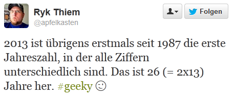

Gestern ging es in Mathematik um Funktionen

Was sind eigentlich Funktionen und wie können wir sie darstellen und mit ihnen arbeiten? Ich wurde gestern durch einige kreative Ideen überrascht.
more ...
Was sind eigentlich Funktionen und wie können wir sie darstellen und mit ihnen arbeiten? Ich wurde gestern durch einige kreative Ideen überrascht.
more ...Vor der nächsten Mathearbeit mal eine Tafel Schokolade essen. Vielleicht hilft es ja?!
How eating chocolate can help improve your maths
more ...Denn: Wenn ich weiß, was eine Ableitungsfunktion ist, verstehe ich auch den folgenden Satz.
"Ein Therapieziel kann es sein, den Prozess der Verschlechterung zu entschleunigen."more ...
Informatik - Zurück in die Kreidezeit.
Ich gebe es frei heraus zu: Ich gehöre zu den Heerscharen von Menschen, die in der Schule nicht besonders gut in Mathematik waren.
So eröffnet die Moderatorin von DRadio Wissen (einem Radiosender, der das Wissen in seinem Namen stolz zur Schau trägt) ihren Beitrag über …
more ...Ein Tweet von @apfelkasten begrüßt das neue Jahr mit einer interessanten Eigenschaft:

Könnt ihr das mt einem kleinen Programm überprüfen? Dann ab damit in die Kommentare. :) Hier ist z.B. eine Variante in Smalltalk:
2013 to: 1900 by: -1 do: [:jahreszahl | ziffern := Set new. jahreszahl asString do: [:ziffer | ziffern add …more ...
{kind=link}
{kind=link}
{kind=link}